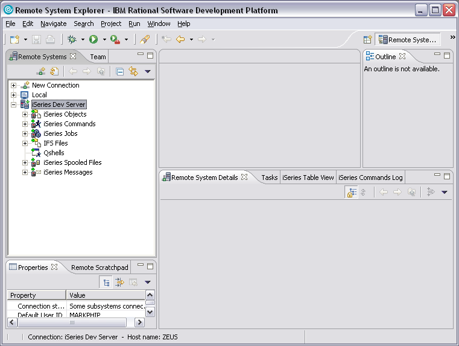
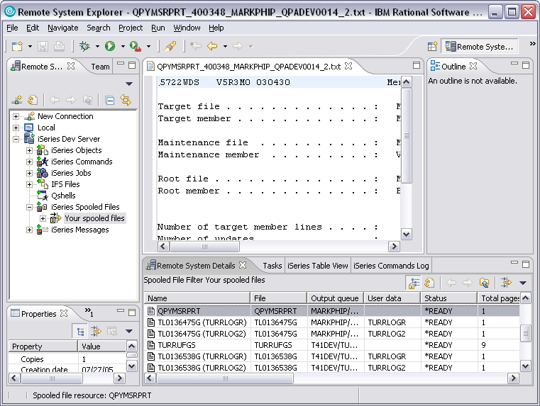
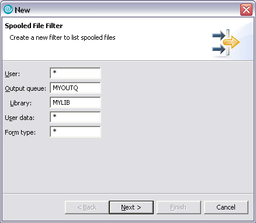
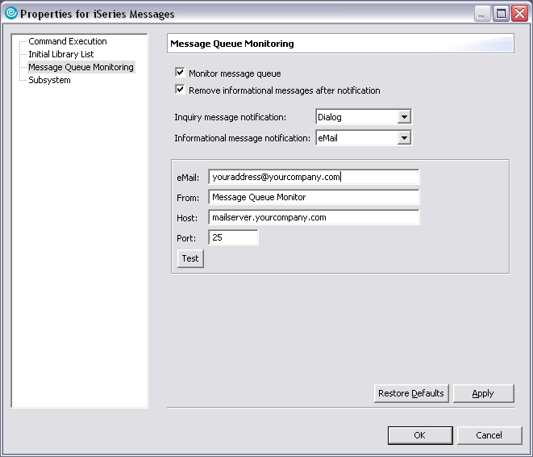
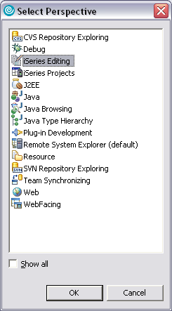
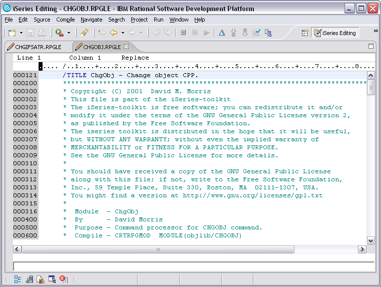
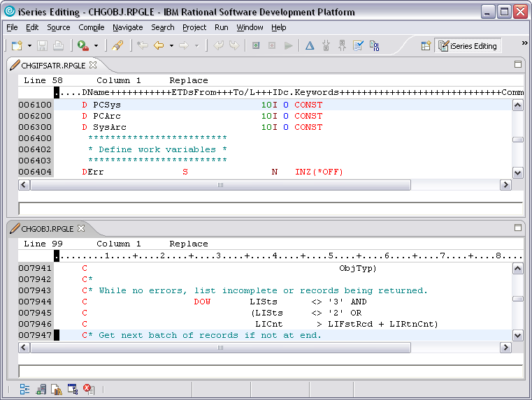
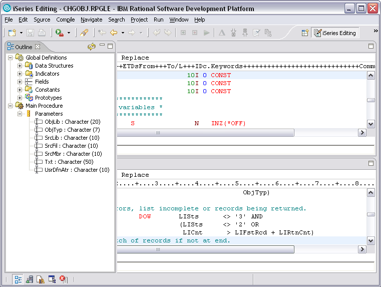

Here you will find a very brief overview of what is included in the RSE Extensions. If you are somewhat familiar with WDSC and the Remote Systems Explorer just seeing these screenshots should make more of this fairly obvious to you. If you are not familiar with RSE, then as you become more familiar with using WDSC you should find that these extensions just naturally fall in line with everything else within WDSC. For example, the following screenshot is an example of what you should see when you restart WDSC after installing the RSE Extensions.
Notice that there are now "subsystems" beneath your iSeries connection for spooled files and messages. These subsystems look and behave in a manner that is consistent with the other subsystems that are included with WDSC such as the iSeries Objects subsystem.
The RSE Extensions consists of three primary features:
An overview of each of these features follows.
The RSE Extensions adds an "iSeries Spooled Files" subsystem to your iSeries connections. This subsystem will initiall include one filter -- "Your spooled files" that will show you all of your spooled files. It should be the equivalent of running the WRKSPLF command. The following screen shows the filter in the Remote Systems Details table view. It also shows a spooled file being shown in the built-in text editor.
As with the other subsystems in RSE, it is also possible to create custom filters:
All of the standard options for managing spooled files are available in the expanded filters. It should be noted that the intent of this feature is only to make it easy for a developer to access compile listings and joblogs. Consequently, the ability to view and access more complicated spooled files, such as *AFP with overlays, is very limited.
The RSE Extensions also adds a subsystem for iSeries Messages. As with the spooled files subsystem, it implements a standard RSE subsystem that allows you to define filters for messages. A default "Your Messages" filter is created automatically. In addition to these features, which are not worthy of additional explanation, there is one other unique feature implemented. Namely, the ability to monitor your personal message queue in the background and notify you of new messages. Right-click on the iSeries Messages subsystem and choose Properties, then click on the Message Queue Monitoring item. You will see a screen somewhat like this:
When the screen first appears, the Monitor Message Queue checkbox will not be checked, and you will not see the rest of the settings. Hopefully the settings are fairly self-explanatory. You are mostly just deciding what you want to do with the various types of messages you receive. If you receive an Inquiry message it is possible to get a dialog that lets you respond to the message from within WDSC.
The final feature that is provided by the RSE Extensions is a new perspective you can switch to when editing source. This feature is mainly a convenience feature. WDSC is very flexible in how you arrange your windows. It also lets you save those arrangements as your own perspective. All we have done is take the best practices we have learned over the years and package those settings up for you. This also allows us to do the one thing that you cannot do yourself, which is give the perspective a unique icon. This makes is easier to visually recognize in the list of open perspectives. Here is a quick overview of using this perspective:
First, before doing anything, open a couple of members for editing in RSE. This makes it easier to see the features of the perspective. To open the perspective for the first time, do Window -> Open Perspective -> Other. You should see a screen like the one that follows.
Select the iSeries Editing Perspective. Note that once the perspective is open, it is easy and fast to switch between open perspectives. Just use the perspective switcher that appears in the top-right hand corner of WDSC, which you can see on the next screen. This next screen shows what the perspective looks like:
It does not look like much, right? That is a big part of the point. All of the views have been removed from the screen so that the source editors are occupying the entire window. You may or may now know this, but if you double-click on an editor or view in any window it will expand to fill the whole space. So you may be asking what is the point? The point is that when a window is "maximized" you can only see one window at a time. So this perspective uses an obvious trick. Instead of maximizing a window, it removes all of them except for the editors. This allows the editors to use all of the screen, but you can still show more than one window. As the following screen shows:
In the above screen, we are now showing two members at the same time. Again, you could always do this, but when you are trying to do it at the same time that other views are showing, it is not very helpful. With the extra screen real-estate this feature now becomes useful. If you are not aware of how to do this, just click and drag one of the editor tabs to any of the edges of the window. The icon will change in a way that you should know when to "drop" the Window. To undo the effect, just drag and drop onto another editor and it will go back to stacking them.
Finally, you might be saying, OK, but I need some of those views, like the Outline view, or the Remote Systems view. Fret not! Take a look at the bottom bar on the previous screenshot. See those icons? Those are all of the common views you would typically need access to. In this case, we have converted them to something called a "Fast View". Click on the icon for the Outline view. You will see something like this:
Notice how the view "slides" into place on top of your editors? In the case of the Outline view, you can expand it and click on a line number for a field or procedure name. This will take you to that part of the source and the view will just slide back out of view. Likewise, you can just click the minimize button in the view, or just click back in your editor. Finally, you can also just switch back to your other perspective. Perspectives, and fast perspective switching is one of the main architectural features in Eclipse/WDSC. Use it, it is your friend.